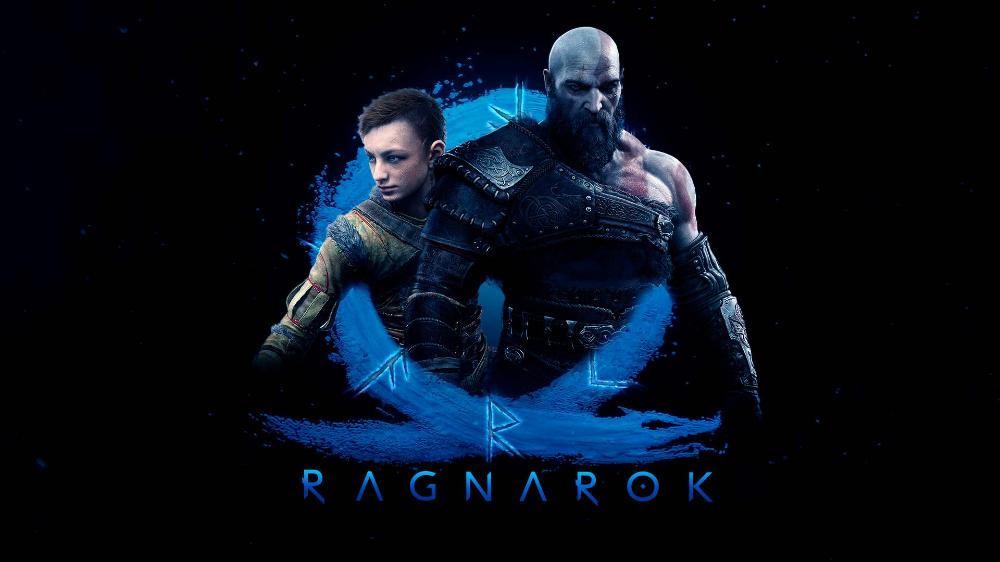

God Of War
God Of War
Some of the best films of all time are those whose different
strengths all work in concert to create a unified, engrossing
whole. The Shining, The Social Network, and Jaws are all
excellent examples of films made up of strong individual parts
complementing each other to form a fantastic work of art. That
is absolutely true of God of War – its musical score elevates
story moments, which flow seamlessly into fantastic action...
 The Legend Of Zelda: Breath of the Wild
The Legend Of Zelda: Breath of the Wild
Ask yourself this: what do you want from a sequel to The
Legend of Zelda: Breath of the Wild? More enemy variety?
Better dungeons? Totally unexpected new ideas? Or is simply
more Hyrule to explore enough for you? Thankfully, you don’t
have to pick just one, because Nintendo’s response to all of
those answers is a casual but confident, “Sure thing.” The
Legend of Zelda: Tears of the Kingdom doesn’t necessarily
revolutionize what...
Dredge
I didn’t know I needed a cosmic horror-fueled fishing game in
my life – at least, not until I played Dredge. It’s not
exactly a full-blown management sim ala Fishing Planet, but
this 12-hour expedition through haunted open waters is both
mysterious and compelling enough to tickle my brain and tug on
all the right heartstrings. I felt possessed into flinging
myself overboard with an unhinged smile cast across my lips
like one of its...
Marvel's Spider-Man 2
At its core, Insomniac Games’ new adventure strives to make
you feel like Spider-Man. And, thankfully, Marvel's Spider-Man
on PS4 succeeds at nearly every swing across Manhattan’s
rooftops. I was left delighted at nearly every step of its
15-hour adventure thanks to a surprisingly deep tale that
mines the plights of both Spider-Man and Peter Parker to great
emotional success. Underpinning that engrossing narrative is
an excellent...
 Diablo-IV
Diablo-IV
Like seeing your favorite band play their greatest hit live,
Diablo 4 is completely awesome to behold even though you know
exactly how the song’s going to go from the moment you hear
the first iconic note. Diablo 4 doesn’t do much to reinvent
ARPGs or push the boundaries of a genre its series helped
pioneer, but the tweaks, improvements, and borrowed ideas it
does introduce have forged this latest model into the best
Diablo we’ve ever...
Alan Wake 2
Thirteen years after his wife went missing in the small town
of Bright Falls, author Alan Wake is trapped inside a Dark
Place that he can’t seem to write himself out of. As I sit
down to type out this review of Alan Wake II, I can somewhat
empathize. This is just so incomparable to anything else I’ve
played in recent memory that it’s tough to work out exactly
where to start. Alan Wake II is a single-player adventure that
seamlessly shifts from slow-burn psychological terror to
frantic survival-horror action...

God Of War: Ragnarok
How do you follow up on one of the greatest video games of all
time? Sony Santa Monica finds itself in a situation not
dissimilar to when Francis Ford Coppola created the sequel to
his mob movie masterpiece, The Godfather. Like part two of the
Corleone story, God of War Ragnarok puts a fierce, younger
member of the family directly under the microscope. In doing
so it manages to reach the heights of its predecessor and, in
some ways, even tower above it. The writing, performances...